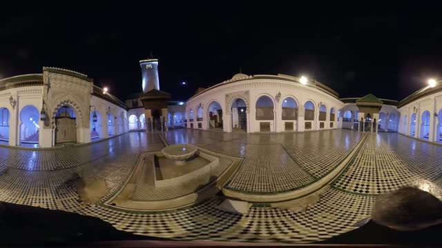
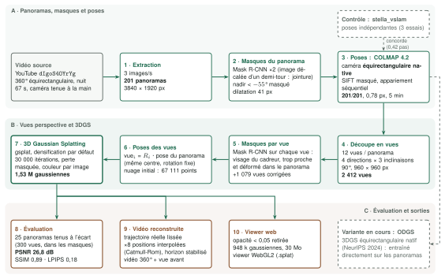

Vidéo d'origine

Vidéo 360° de nuit, chaîne bokbah, 2021 · dIgoS4OYrYg
Notre reconstruction (vidéo)
Rendu du modèle 3DGS le long du trajet de la vidéo
Glisser pour regarder · molette ou ↑↓ pour avancer · ←→ pour se décaler · deux doigts sur écran tactile
